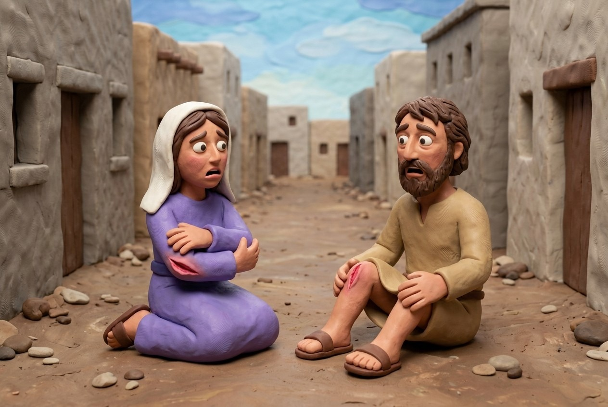
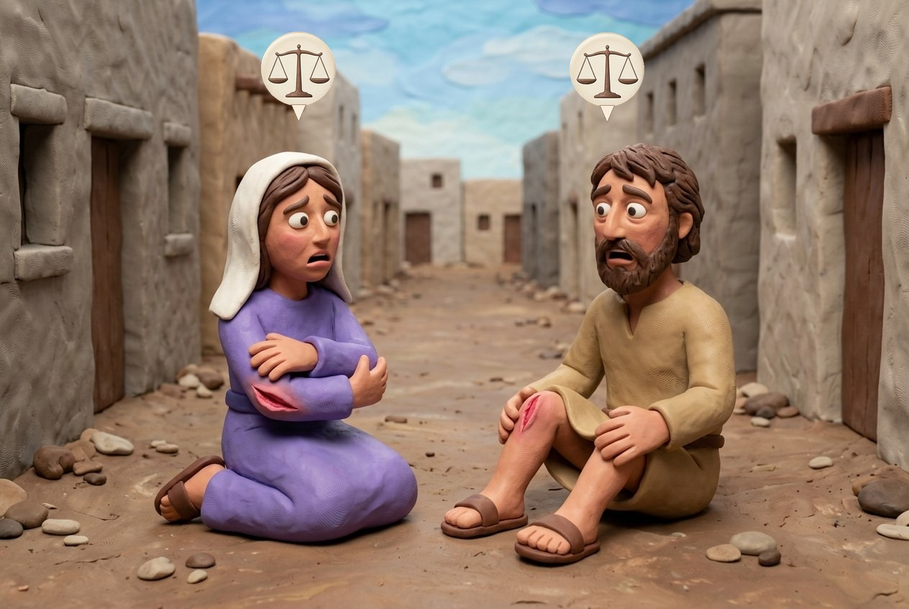

משנה 1: כד ברשות הרבים
השובר כד שהונחה ברשות הרבים פטור, אך אם ניזוק — בעל הכד משלם; ואם נשברה כדו שם, חייב על מה שגרמה.
כד שהונח ברשות הרבים
- אדם הניח כד ברשות הרבים ובא אחר ונתקל בה ושברה — פטור.
- אם הוזק בה — בעל החבית חייב בנזקו.
- המועד פטור כי אנשים המהלכים טרודים במחשבותיהם ולא מסתכלים על הקרקע; זה היה על בעל החבית לשמור שאף אחד לא ימעד בה.
כד שנשברה ברשות הרבים
- נשברה כדו ברשות הרבים והחליק אחד במים או שלקה בחרסית — חייב.
- רבי יהודה אומר: במתכוין — חייב, באינו מתכוין — פטור.
הערות קהתי
- הגמרא מפרשת את "מתכוין" של רבי יהודה — שהתכוין לזכות בחרסים ובמים; אם לא התכוין לכך, היה אונס ופטור.
- אפילו הפקיר את הכד, עדיין חייב על הנזק כמו בור; אם נפל אדם לבור ומת אין משלמים כופר, אבל על נזק משלמים.
המניח את הכד ברשות הרבים ובא אחר ונתקל בה ושברה פטור. ואם הוזק בה. בעל החבית חייב בנזקו.
נשברה כדו ברשות הרבים והוחלק אחד במים או שלקה בחרסיה חייב.
רבי יהודה אומר במתכוין חייב. באינו מתכוין פטור:
ביאור
המניח את הכד ברשות הרבים ובא אחר ונתקל בה ושברה — הרי זה פטור על מה ששבר, ואם הוזק בה, בכד — בעל החבית שהניחה חייב בנזקו של הניזק.
נשברה כדו ברשות הרבים והוחלק (החליק) אחד במים שהיו בכד, ונפל ונחבל, או שלקה בחרסית, בחרסים של שברי הכד — חייב בעל הכד. ר' יהודה אומר: במתכוין לשפוך את המים — חייב, באינו מתכוין — פטור.


 12
12
 12
12
 ?
?
 ?
?
משנה 2: מים, קוצים וזכוכית
השופך מים ברשות הרבים, המצניע קוץ או זכוכית, או מי שגדרו נפלה לשם — חייב בנזק.
על מה חייב
- השופך מים ברשות הרבים והוזק בהן אחר — חייב בנזקו.
- המצניע את הקוץ ואת הזכוכית, או הגודר גדרו בקוצים, או גדר שנפלה לרשות הרבים והוזקו בהן אחרים — חייב בנזקן.
מדוע
- מקרים אלו נחשבים כמו בור: הוא השאיר סכנה (מים, קוצים, זכוכית, גדר שנפלה) ברשות הרבים, והיא הזיקה מישהו.
הערות קהתי
- אף בעונת הגשמים, כששפיכת מים לרשות הרבים מותרת, חייב בנזק שנגרם.
- אם גדר את גדרו בקוצים בתוך רשותו ונפגע מי שנשען עליה — פטור, שאין דרך בני אדם להתחכך בכתלים.
השופך מים ברשות הרבים והוזק בהן אחר חייב בנזקו. המצניע את הקוץ ואת הזכוכית. והגודר את גדרו בקוצים. וגדר שנפל לרשות הרבים. והוזקו בהן אחרים חייב בנזקן:
ביאור
השופך מים ברשות הרבים והוזק בהן אחר — חייב השופך בנזקו. המצניע (טומן, מחביא) את הקוץ ואת הזכוכית באדמה, וכן הגודר את גדרו שבין רשותו לרשות הרבים בקוצים, וכן גדר שנפל לרשות הרבים, והוזקו בהן אחרים — הרי זה חייב בנזקן.
 ?
?
 ?
?
 ?
?
 ?
?
משנה 3: תבן וגלל ברשות הרבים
מי שהוציא דבר לרשות הרבים והזיק — כל הקודם בו זכה, והוא עדיין משלם על הנזק.
תבן וקש
- אדם הוציא תבנו וקשו לרשות הרבים לזבלים וניזוק בהם אחר — חייב בנזקו, וכל הקודם בהן זכה.
- רבן שמעון בן גמליאל: כל מי שחוסם את רשות הרבים וגורם נזק חייב לשלם עליו, ומי שלוקח את החפצים ראשון זוכה בהם.
גללי בהמה
- ההופך את הגלל ברשות הרבים והוזק בו אחר — חייב בנזקו.
- הגלל הוא הפקר, ועל ידי היפוכו כדי לקחתו, הוא נעשה בעליו, ולכן הוא חייב על הנזק שהוא גורם.
הערות קהתי
- חכמים הפקירו את התבן כקנס, כדי שלא יקלקל את רשות הרבים.
- "כל המקלקלין ברשות הרבים" של רבן שמעון בן גמליאל כולל אף את המוציא דבר ברשות, כגון זבל שהוצא בזמן המותר.
המוציא את תבנו ואת קשו לרשות הרבים לזבלים. והוזק בהן אחר. חייב בנזקו. וכל הקודם בהן זכה.
רבן שמעון בן גמליאל אומר כל המקלקלין ברשות הרבים והזיקו. חייבין לשלם. וכל הקודם בהן זכה.
ההופך את הגלל ברשות הרבים והוזק בהן אחר חייב בנזקו:
ביאור
המוציא את תבנו וקשו לרשות הרבים לזבלים, שרוצה להשתמש בהם אחר כך לשם זיבול, והוזק בהן אחר — חייב המוציא את הקש בנזקו, וכל הקודם לזכות בהן זכה בהם, שיכול כל אדם לקחת קש זה לעצמו. רבן שמעון בן גמליאל אומר: כל המקלקלין ברשות הרבים והזיקו בקלקול זה — חייבין לשלם, וכל הקודם בהן זכה.
ההופך את הגלל (גללי בהמה) שהיו מונחים ברשות הרבים, והוזק בהן אחר — חייב בנזקו.
 ?
?
 ?
?
משנה 4: שני קדרין
אם קדר נתקל ונפל והקדר שאחריו נפל עליו, הראשון חייב בנזקי השני אם היה יכול לקום בזמן.
המקרה
- שני קדרין היו מהלכין זה אחר זה, נתקל הראשון ונפל, ונתקל השני בראשון: הראשון חייב בנזקי השני.
- הראשון חייב רק אם היה יכול לקום לפני שהשני נתקל בו, שאז היה עליו להיזהר יותר. אם לא היה יכול לקום בזמן, זה אונס והוא פטור.
הערות קהתי
- רב נחמן בר יצחק סובר שהראשון חייב אפילו אם לא היה יכול לקום, ובלבד שהיה יכול להזהיר את מי שאחריו.
- הראשון משלם רק על נזקי גופו של השני. אם ניזוקו רק כליו, פטור, שהרי זה כנזקי בור, ובור פטור על הכלים.
הלכה
- הראשון חייב רק אם היה יכול לקום לפני שהשני נתקל בו. כך פסקו הרי"ף והרמב"ם.
שני קדרין שהיו מהלכין זה אחר זה. ונתקל הראשון ונפל. ונתקל השני בראשון. הראשון חייב בנזקי שני:
ביאור
שני קדרין נושאי קדרות שהיו מהלכין ברשות הרבים זה אחר זה, ונתקל הראשון בגבשושית ונפל, ונתקל השני בראשון ונפל — הראשון חייב בתשלומי נזקי השני.
 ?
?
 ?
?
משנה 5: חבית וקורה
ברשות הרבים לכל אחד רשות להלך. מי משלם כשהקורה שוברת את החבית תלוי במי היה ראשון, ובעמידה פתאומית או אזהרה.
זה מול זה
- זה בא בחביתו וזה בא בקורתו, ונשברה החבית בקורה: בעל הקורה פטור, שלזה רשות להלך ולזה רשות להלך.
הקורה ראשונה
- היה בעל קורה ראשון ובעל חבית אחרון, ונשברה חבית בקורה: בעל הקורה פטור. ואם עמד, חייב. ואם אמר לבעל החבית עמוד, פטור.
- בעל החבית ההולך מאחור היה צריך להיזהר לא להתקרב לקורה, ולכן בעל הקורה פטור. אם הוא עצר פתאום, למשל כדי לנוח, בלי אזהרה, הוא חייב; אם הוא הזהיר את האחר לעצור בזמן, הוא פטור.
החבית ראשונה
- היה בעל חבית ראשון ובעל קורה אחרון: בעל הקורה חייב. ואם עמד בעל חבית, בעל הקורה פטור. ואם אמר בעל החבית לבעל קורה עמוד, בעל הקורה חייב.
- וכן זה בא בנרו וזה בפשתנו.
מה לומדים
- המהלך מאחור חייב תמיד להיזהר, כל עוד זה שלפניו לא עוצר פתאום בלי אזהרה; וכך גם לגבי הנר והפשתן.
האם בעל הקורה חייב?
| המצב | בעל הקורה |
|---|---|
| הולכים זה כנגד זה | פטור |
| קורה ראשונה, בעל החבית נכנס בה | פטור |
| קורה ראשונה, בעל הקורה עמד פתאום | חייב |
| קורה ראשונה, בעל הקורה אמר עמוד | פטור |
| חבית ראשונה, בעל הקורה נכנס בה | חייב |
| חבית ראשונה, בעל החבית עמד פתאום | פטור |
| חבית ראשונה, בעל החבית אמר עמוד | חייב |
זה בא בחביתו וזה בא בקורתו. נשברה כדו של זה בקורתו של זה פטור. שלזה רשות להלך ולזה רשות להלך.
היה בעל קורה ראשון ובעל חבית אחרון. נשברה חבית בקורה פטור בעל הקורה. ואם עמד בעל הקורה חייב. ואם אמר לבעל החבית עמוד פטור.
היה בעל חבית ראשון ובעל קורה אחרון. נשברה חבית בקורה חייב. ואם עמד בעל חבית פטור. ואם אמר לבעל קורה עמוד חייב. וכן זה בא בנרו וזה בפשתנו:
ביאור
זה בא בחביתו ברשות הרבים וזה בא מולו דלל בקורתו, שהיו מהלכים זה כנגד זה. נשברה כדו של זה בקורתו של זה — פטור בעל הקורה משום שלזה יש רשות להלך ברשות הרבים, וכן לזה יש רשות להלך בה.
היה בעל הקורה ראשון ובעל חבית אחרון, מהלך אחריו, אם נשברה חבית בקורה — פטור בעל הקורה, שהרי בעל החבית רואה אותו והיה עליו להיזהר.
 ?
?
 ?
?
 ?
?
 ?
?
 ?
?
 ?
?
 ?
?
 ?
?
משנה 6: ריצה והליכה
שנים שהיו מהלכין ברשות הרבים, אחד רץ ואחד מהלך או שניהם רצים, והזיקו זה את זה — שניהם פטורין.
המקרה
- שנים שהיו מהלכין ברשות הרבים, אחד רץ ואחד מהלך, או שניהם רצים, והזיקו זה את זה — שניהם פטורין.
- כל אחד מהם גרם לנזק לעצמו, ואף אחד לא פעל מתוך כוונה, ולכן שניהם פטורים.
הערות קהתי
- הגמרא מבארת שהרץ הוא בערב שבת או ערב יום טוב, שאז מותר לרוץ. בימים אחרים רץ שהזיק להולך חייב. אם שניהם רצו — שניהם פטורין, ששניהם שינו. קהתי מביא את הרמב"ם (הלכות חובל ומזיק ו:ט).
שנים שהיו מהלכין ברשות הרבים. אחד רץ ואחד מהלך. או שהיו שניהם רצים. והזיקו זה את זה. שניהם פטורין:
ביאור
שנים שהיו מהלכין ברשות הרבים, או אחד רץ ואחד מהלך, או שהיו שניהם רצין, והזיקו זה את זה — שניהם פטורין.

12
 12
12
משנה 7: ביקוע עצים
המבקע עצים והזיק — חייב, בין אם הוא ברשות היחיד ובין אם הוא ברשות הרבים, ובין אם הניזק ברשות היחיד או ברשות הרבים.
המקרה
- אדם שביקע עצים ברשות היחיד והזיק ברשות הרבים, או ברשות הרבים והזיק ברשות היחיד, או ברשות היחיד והזיק ברשות היחיד אחר — חייב.
- הוא משלם בכל המקרים האלה גם אם לא התכוון להזיק, משום שאדם הוא תמיד מועד: היה עליו להבין שבקיעת עצים שולחת רסיסים לכל עבר, ולנקוט זהירות יתרה.
המבקע ברשות היחיד והזיק ברשות הרבים. ברשות הרבים והזיק ברשות היחיד. ברשות היחיד והזיק ברשות היחיד אחר. חייב:
ביאור
המבקע עצים ברשות הרבים וניתז דבר והזיק ברשות היחיד של אחרים, או שהיה מבקע עצים ברשות היחיד שלו והזיק ברשות הרבים, וכן אם היה מבקע ברשות היחיד שלו והזיק ברשות היחיד של אחר — חייב בכל אלה.
 ?
?
 ?
?
משנה 8: שני שוורים או שני אנשים שחבלו זה בזה
שני שוורים או שני אנשים שחבלו זה בזה משלמים על המותר, דהיינו ההפרש בין שני הנזקים: תמים משלמים חצי נזק, מועדים ואנשים משלמים נזק שלם.
המקרים במשנה
- שני שוורים תמים שחבלו זה את זה משלמים במותר חצי נזק.
- שניהם מועדים משלמים במותר נזק שלם.
- מועד בתם משלם במותר נזק שלם; תם במועד משלם במותר חצי נזק.
- שני אנשים שחבלו זה בזה משלמים במותר נזק שלם.
- אדם בתם משלם במותר נזק שלם; תם באדם משלם במותר חצי נזק.
- רבי עקיבא אומר: אף תם שחבל באדם משלם במותר נזק שלם.
רקע
- המשנה מכסה שלוש קבוצות: שוורים שהזיקו זה את זה, אנשים שהזיקו זה את זה, ואדם ושור שהזיקו זה את זה.
- אדם הוא תמיד מועד (כמו במשנה 2:6).
הערות קהתי
- התשלום הוא רק על המותר. לדוגמה: שור אחד הזיק במאה והשני בארבעים, וההפרש הוא שישים. שני תמים: בעל המזיק משלם חצי, שלושים. שני מועדים: משלם שישים.
- לגבי מועד בתם מביא קהתי שתי קריאות. לפי הרא"ש המותר הוא ההפרש בין הנזקים: מאה פחות ארבעים שווה שישים, והמועד משלם שישים שלמים. לפי הרמב"ם המותר הוא ההפרש בין התשלומים: המועד חייב מאה, והתם חייב עשרים שהם חצי מארבעים, אז המועד משלם שמונים.
הלכה
- ההלכה כתנא קמא: תם שחבל באדם משלם חצי נזק בלבד, ולא כרבי עקיבא.
מי משלם במותר
| מי חבל במי | התשלום |
|---|---|
| שני תמים | חצי נזק |
| שני מועדים | נזק שלם |
| אחד מועד ואחד תם | המועד משלם נזק שלם; התם חצי נזק |
| שני אנשים | נזק שלם |
| אדם ותם | האדם משלם נזק שלם; בעל השור חצי נזק (רבי עקיבא: נזק שלם) |
שני שוורים תמים שחבלו זה את זה משלמים במותר חצי נזק. שניהם מועדים משלמים במותר נזק שלם. אחד תם. ואחד מועד. מועד בתם משלם במותר נזק שלם. תם במועד משלם במותר חצי נזק.
וכן שני אנשים שחבלו זה בזה משלמים במותר נזק שלם. אדם במועד. ומועד באדם. משלם במותר נזק שלם. אדם בתם ותם באדם. אדם בתם משלם במותר נזק שלם. תם באדם משלם במותר חצי נזק.
רבי עקיבא אומר אף תם שחבל באדם משלם במותר נזק שלם:
ביאור
שני שוורין תמין שחבלו זה את זה — משלמין במותר (בהפרש) חצי נזק. כלומר, אומדים את הנזקים שהזיקו שניהם, ואם נמצא שניזוק אחד יותר מחבירו, הרי מי שהזיק שורו יותר משלם לניזק מחצית מן הנזק היתר. אם היו שניהן (שני השוורים) מועדין והזיקו זה את זה — משלמין במותר נזק שלם.
היה אחד השוורים תם ואחד מועד, אם הזיק יותר המועד בתם מאשר התם במועד — משלם במותר נזק שלם, ואם תם הזיק במועד יותר מאשר המועד בתם — משלם במותר חצי נזק.
וכן שני אנשים שחבלו זה בזה — משלמין במותר נזק שלם, שהרי אדם מועד לעולם.
אדם שחבל בשור מועד ובאותה שעה חבל השור המועד באותו אדם — משלם במותר נזק שלם. הזיקו זה את זה אדם בתם ותם באדם, הרי אדם בתם — משלם במותר נזק שלם, תם באדם — משלם במותר חצי נזק. ר' עקיבא אומר: אף תם שחבל באדם — משלם במותר נזק שלם, שלדעתו כאשר שור מזיק אדם אין הבדל בין תם למועד.
משנה 9: מכירת השור החי וחלוקתו
התורה אומרת למכור את השור החי ולחצות את כספו. המשנה מראה כיצד הדבר מתבצע כששני השוורים שווים סכומים שונים.
הפסוק
- שמות 21:35: "ומכרו את השור החי וחצו את כספו וגם את המת יחצון". הפסוק מלמד שבעלים של שור תם משלם חצי נזק מגוף השור שנגח.
המקרים
- שור תם שווה מנה נגח שור שווה מאתיים והנבלה אינה שווה כלום: הניזק נוטל את השור המזיק.
- שור ששווה 200 נגח שור ששווה 200 והנבלה אינה שווה כלום: רבי מאיר אומר זהו המקרה של הפסוק, "ומכרו את השור החי וחצו את כספו".
- וכן הלכה, אך קיימת רק חצי הפסוק. אם שור שווה מאתיים נגח שור שווה מאתיים והנבלה שווה חמישים זוז, כל אחד נוטל חצי החי וחצי המת.
- כאשר שווי הנבלה הוא 50, הנזק הוא 150 וחצי הנזק הוא 75. כל בעלים מסיים עם 125 והפסיד 75.
הלכה
- הלכה כרבי יהודה.
שור שוה מנה שנגח שור שוה מאתים ואין הנבלה יפה כלום. נוטל את השור.
שור שוה מאתים שנגח שור שוה מאתים ואין הנבלה יפה כלום.
אמר רבי מאיר על זה נאמר (שמות כא, לה) ומכרו את השור החי וחצו את כספו.
אמר לו רבי יהודה וכן הלכה. קיימת ומכרו את השור החי וחצו את כספו. ולא קיימת וגם את המת יחצון. ואיזה. זה שור שוה מאתים שנגח שור שוה מאתים והנבלה יפה חמשים זוז. שזה נוטל חצי החי וחצי המת. וזה נוטל חצי החי וחצי המת:
ביאור
שור תם שוה מנה (מאה דינרים) שנגח שור שוה מאתים דינרים, ואין הנבילה של השור המת יפה (שווה) כלום — נוטל הניזק את השור המזיק כולו, שהרי הוא שווה חצי הנזק.
שור תם שהיה שוה מאתים שנגח שור אחר שוה מאתים, ואין הנבילה יפה (שווה) כלום, אמר ר' מאיר: על מקרה זה נאמר בתורה: "ומכרו את השור החי וחצו את כספו" (שמות כא, לה).
אמר לו ר' יהודה: אכן וכן הלכה, ואולם לענין פירוש הפסוק קיימת (הסברת) מה שנאמר "ומכרו את השור החי וחצו את כספו", ולא קיימת את חציו השני "וגם את המת יחצון" (שמות כא, לה), שהרי אין בשור המת כל שווי. ואיזה המקרה שמדובר בו בכתוב — זה שור שוה מאתים שנגח שור אחר שוה מאתים, והנבילה יפה חמשים זוז, שזה נוטל חצי ערכו של החי (מאה) וחצי המת (עשרים וחמישה), וזה נוטל חצי החי וחצי המת.
משנה 10: חיוב האדם וחיוב בעל השור
אותו נזק עצמו יכול לחייב את בעל השור ולפטור את האדם שעשהו בעצמו, ולהיפך.
חמישה זוגות
- בושת: שורו בייש — פטור; הוא עצמו בייש — חייב.
- עין עבדו או שינו: שורו סימא או הפיל — פטור משחרור; הוא עצמו עשה — חייב לשחררו.
- אביו ואמו: שורו חבל בהם — חייב; הוא חבל בהם — פטור.
- גדיש בשבת: שורו הדליק — חייב; הוא הדליק — פטור, מפני שהוא מתחייב בנפשו.
מדוע
- שור משלם רק על נזק, ולא על בושת, צער, ריפוי או שבת, ולכן הבעלים ששורם ביישׁ מישהו פטור.
- שחרור עבד הוא העונש רק למי שהוא עצמו סימא או הפיל שן של עבדו (שמות 21:26-27); כששורו עושה זאת הוא לא משחרר אותו.
- אדם שחייב מיתה אינו משלם גם: אדם לא גם מת וגם משלם. לכן מי שחובל בהוריו או מדליק אש בשבת הוא עצמו פטור מתשלום, אבל על שורו הוא משלם.
הערות קהתי
- המדליק גדיש בשבת פטור מתשלום אפילו בשוגג, שאין אדם מת ומשלם.
אם שורו עשה ואם הוא עשה
| המעשה | אם שורו עשה | אם הוא עשה |
|---|---|---|
| בושת | פטור | חייב |
| עין עבדו או שינו | פטור משחרור | חייב לשחררו |
| חבלה באביו ואמו | חייב | פטור |
| גדיש שהודלק בשבת | חייב | פטור (מתחייב בנפשו) |
יש חייב על מעשה שורו ופטור על מעשה עצמו. פטור על מעשה שורו וחייב על מעשה עצמו.
שורו שבייש פטור והוא שבייש חייב. שורו שסימא את עין עבדו והפיל את שינו פטור. והוא שסימא את עין עבדו והפיל את שינו חייב.
שורו שחבל באביו ואמו חייב. והוא שחבל באביו ואמו פטור.
שורו שהדליק את הגדיש בשבת חייב. והוא שהדליק את הגדיש בשבת פטור. מפני שהוא מתחייב בנפשו:
ביאור
יש חייב על מעשה נזק שעשה שורו ופטור על אותו מעשה אם עשה אותו הוא עצמו. ולהיפך, יש פטור על מעשה שורו וחייב על מעשה עצמו.
כיצד? שורו שבייש אדם — פטור מלשלם על מה שבייש, ואילו הוא עצמו שבייש — חייב. וכן שורו שסימא את עין עבדו של בעליו, וכן אם הפיל את שינו של העבד — פטור האדון מלשחרר בשל כך את עבדו, ואילו הוא עצמו שסימא את עין עבדו וכן אם הפיל את שינו — חייב לשחררו, כאמור בתורה (שמות כא, כו–כז) שהאדון העושה זאת לעבדו חייב לשחררו.
לעומת זאת, שורו שחבל באביו ובאמו של בעליו — חייב הבן לשלם את הנזק שהזיק להם, ואילו הוא עצמו שחבל באביו ובאמו — פטור מלשלם להם. וכן שורו שהדליק את הגדיש בשבת, הרי בעליו חייב לשלם את הנזקים, ואילו הוא עצמו שהדליק את הגדיש בשבת — פטור מתשלומים מפני שהוא מתחייב בנפשו מיתה על שחבל באביו ואמו, וכן על שחילל את השבת, וחייבי מיתה פטורים מתשלומים.
משנה 11: מי צריך להוכיח?
המוציא מחברו עליו הראיה. אם אינו יכול להוכיח — השני פטור.
שור רודף אחר שור אחר
- שור שהיה רודף אחר שור אחר והוזק, וזה אומר שורך הזיק וזה אומר בסלע לקה — המוציא מחברו עליו הראיה.
שני שוורים רודפים אחר שלישי
- שני שוורים רדפו אחר אחד וכל בעלים אומר שורך הזיק — שניהם פטורין. אם שניהם של איש אחד — שניהם חייבים.
- כל בעלים יכול לדחות את תביעת הניזק באומרו ששורו של האחר עשה זאת, ולכן אף אחד לא משלם. אם שני השוורים הם של אדם אחד, הוא לא יכול לומר כך, ולכן הוא משלם.
גדול וקטן, תם ומועד
- אם היה אחד גדול ואחד קטן, או אחד תם ואחד מועד, והבעלים חולקים איזה הזיק — המוציא מחברו עליו הראיה.
- הניזק אומר שהשור הגדול, או המועד, עשה זאת, כי זה משלם יותר; הנתבע אומר שזה היה הקטן או התם. הנטל עדיין על התובע.
שנים ניזוקו, שנים הזיקו
- אותו דין חל כששני שוורים הוזקו על ידי שני שוורים: המוציא מחברו עליו הראיה.
הכלל
- המוציא מחברו עליו הראיה — בלי הוכחה ברורה הנתבע פטור.
- קהתי קורא לזה יסוד המשנה: אפילו אם הנתבע מודה בחלק, אינו חייב במה שהתובע אינו יכול להוכיח.
הערות קהתי
- בשני שוורים של בעלים אחד, מסבירה הגמרא ששניהם תמים ועומדים לפנינו. תם משלם מגופו בלבד, ולכן הניזק גובה מן הקטן שבהם.
שור שהיה רודף אחר שור אחר והוזק. זה אומר שורך הזיק. וזה אומר לא כי אלא בסלע לקה. המוציא מחבירו עליו הראיה.
היו שנים רודפים אחר אחד. זה אומר שורך הזיק וזה אומר שורך הזיק שניהם פטורין. אם היו שניהן של איש אחד שניהן חייבים.
היה אחד גדול ואחד קטן. הניזק אומר גדול הזיק. והמזיק אומר לא כי אלא קטן הזיק. אחד תם ואחד מועד. הניזק אומר מועד הזיק. והמזיק אומר לא כי אלא תם הזיק. המוציא מחברו עליו הראיה.
היו הניזוקין שנים אחד גדול ואחד קטן. והמזיקים שנים אחד גדול ואחד קטן. הניזק אומר גדול הזיק את הגדול וקטן את הקטן. ומזיק אומר לא כי אלא קטן את הגדול וגדול את הקטן. אחד תם ואחד מועד. הניזק אומר מועד הזיק את הגדול ותם את הקטן. והמזיק אומר לא כי אלא תם את הגדול ומועד את הקטן. המוציא מחברו עליו הראיה:
ביאור
שור שהיה רודף אחר שור אחר, והוזק השור הנרדף, ולא ראו כיצד הוזק, זה, בעל השור הניזק, אומר: שורך הזיק את שורי, וחייב אתה בתשלומי נזקי, וזה אומר: לא כי, אלא בסלע לקה (קיבל מכה) ולא מחמת נגיחת שורי, ופטור אני מכל תשלום. במקרה כזה — המוציא מחבירו עליו הראיה, שכל עוד לא הוכיח הניזק שהשור הרודף עשה זאת — אין בעל השור הרודף משלם על הנזק.
היו שנים (שני שוורים של שני בעלים) רודפים אחר שור אחד של אדם שלישי, והוזק השור על ידי אחד מן השוורים הרודפים, אלא שזה (בעל שור אחד) אומר לחבירו: שורך הזיק, וזה אומר: שורך הזיק —
 12
12
 12
12
 ?
?
 ?
?
סיכום הפרק
טיוטה לעיון. התקצירים בניסוח שלנו.
עקרונות מרכזיים
- מי שנכשל על חפץ שהושאר ברשות הרבים פטור, שכן הולכי רגל אינם צופים בקרקע; אם הוא נפגע, בעל החפץ משלם על הנזק. 3:1
- שפיכת מים, הטמנת קוצים או זכוכית, או הפלת גדר קוצים לרשות הרבים מחייבים אותו על הנזק, כמו בור: הוא השאיר מפגע במקום שאין לו זכות להשאיר. 3:2
- מה שאדם מוציא לרשות הרבים ומזיק בו, הוא משלם עליו, ובכל זאת כל מי שמגיע ראשון יכול לקחת אותו. מי שהופך זבל הפקר כדי לקחת אותו הופך לבעליו וחייב על נזקיו. 3:3
- הנתקל ונפל חייב בנזק שגרם אם היה יכול לעמוד בזמן. אם לא היה יכול פטור משום אונס. 3:4
- בהתנגשות ברשות הרבים המהלך מאחור חייב תמיד להיזהר, כל עוד זה שלפניו לא עוצר פתאום בלי אזהרה. אם שניהם רצו, אף אחד לא משלם, כי כל אחד גרם לזה לעצמו. 3:53:6
- מי שמבקע עצים חייב על כל נזק שהוא גורם, בכל רשות ששניהם נמצאים בה, כי אדם הוא תמיד מועד והיה עליו לנקוט זהירות יתרה. 3:7
- כששני שוורים או שני בני אדם הזיקו זה את זה משלמים על המותר: חצי נזק בתם ונזק שלם במועד ובאדם. 3:8
- אותו נזק יכול לחייב את בעל השור אך לא את האדם, וההפך (בושת, עין של עבד, הורים, אש בשבת). אדם אינו גם מת וגם משלם. 3:10
- המוציא מחברו עליו הראיה: בלי ראיה הנתבע פטור. ואם שני השוורים של בעלים אחד, בעליהם חייב. 3:11
מונחי מפתח
רשות הרבים רשות הרבים 3:13:2
הרחוב ושטחים משותפים אחרים. אסור להשאיר מכשולים או סכנות בתוכו; מי שעושה כן חייב על הנזק.
תם תם 3:8
שור שלא הועד נגד אותו סוג נזק. בעליו משלם חצי נזק, מגוף השור עצמו.
מועד מועד 3:8
שור שהועד, או בהמה שמזיקה בדרכה הרגילה. בעליו משלם נזק שלם מיטב הארץ. אדם הוא תמיד מועד.
חצי נזק ונזק שלם חצי נזק, נזק שלם 3:8
התשלום על הנזק שנעשה: חצי נזק לתם, נזק שלם למועד ולאדם.
המוציא מחברו עליו הראיה 3:11
חובת מי שרוצה תשלום להביא ראיה. בלעדיה הנתבע לא משלם כלום.
דיונים מרכזיים
האם חשובה כוונתו של מי שכדו נשברה ברשות הרבים? 3:1
הוא חייב על הנזק, ללא הבחנה.
רק אם שברה במתכוון; אם שברה שלא במתכוון פטור.
האם רבן שמעון בן גמליאל חולק על תנא קמא? 3:3
המוציא תבנו וגללו חייב בנזקי הניזק, וכל הקודם זכה.
כל מי שמשאיר דברים מפריעים ברשות הרבים חייב להשיב אם הם גורמים נזק, וכל מי שמגיע ראשון יכול לקחת אותם. קהתי: זה כולל גם אלו שמוציאים דברים ברשות.
מה משלם שור תם שהזיק אדם? 3:8
בעל השור משלם חצי נזק בלבד.
אפילו שור תם שהזיק אדם משלם נזק שלם על הנזק הגדול יותר.
כיצד מפרשים את הפסוק ומכרו את השור החי וחצו את כספו? 3:9
שני שוורים שווים מאתיים והנבלה אינה שווה כלום מוכרים את החי וחולקים דמיו.
כן הדין, אך זה מקיים רק חצי הפסוק. הפסוק מדבר גם במכירת השור החי וגם בחלוקת הנבלה, כגון כשהנבלה שווה חמישים.